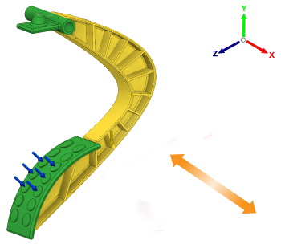

<div id="infoManufacturingDieCastingSetupOrientationNeutralX">
    <p>按照与空间坐标轴的 X 轴平行的方向调整模具中心处铸件的方向。</p>
    <p>使用顶出方向按钮可以设置铸造操作的开模方向。 参照全局坐标系确定开模方向。</p>
    <table class="tipTable" cellspacing="0">
        <tr>
            <td><br/> </td>
        </tr>
    </table>
    <p>注意: 您可以为单铸造配置选择多个开模方向。</p>
</div>